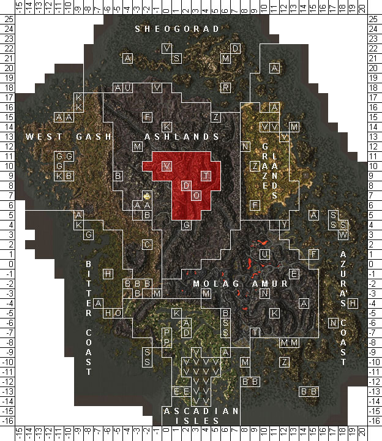
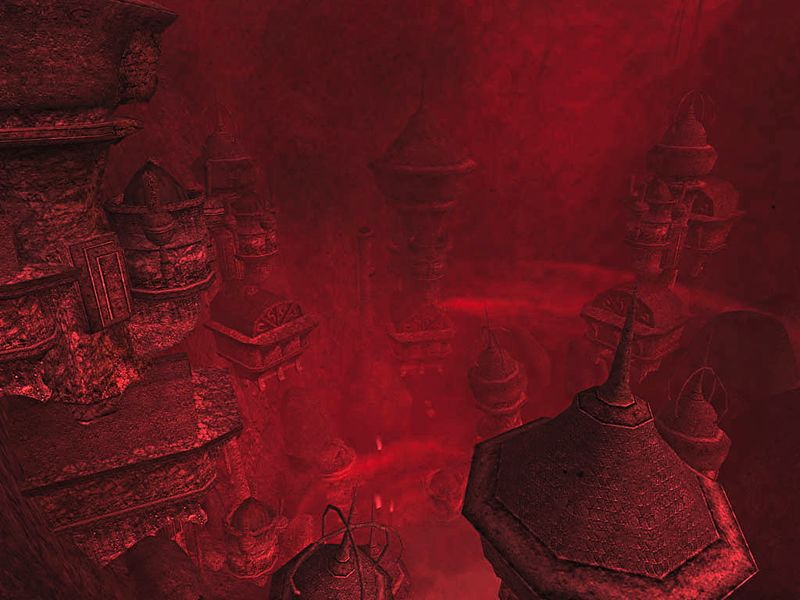
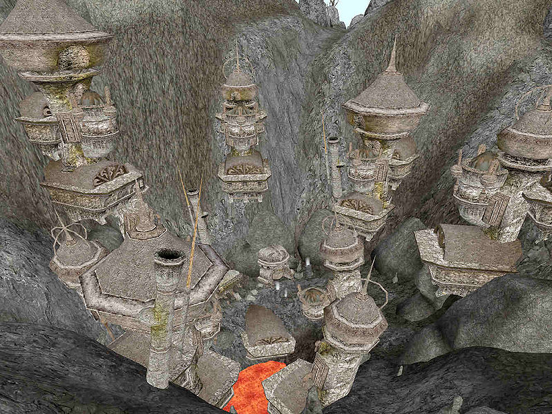
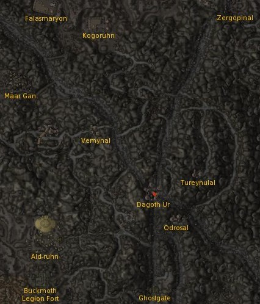

|
 Map of Red Mountain |
|
 Blight storm conditions in the Red Mountain region |
|
 Dagoth Ur Citadel |
|
 Overview and major locations in Red Mountain |
Red Mountain is a vast volcano that dominates the island of Vvardenfell in Morrowind, and is the second highest mountain in Tamriel. The island actually took its name from the volcano: the original name of Red Mountain was Vvardenfell, which translates to "City of the Strong Shield" in Dwemeris. On a clear day, Red Mountain's peak can be seen from the city of Mournhold, some 250 miles to the south. The mountain is generally considered the most dangerous region in all of Vvardenfell.
Access to Red Mountain is restricted: the Tribunal has built the Ghostfence, a giant Spirit Wall, around the perimeter of the mountain. There are only two ways inside without using an extended jump or levitation; entering through Ghostgate in the south or going through Kogoruhn in the north. This region is marked by the steep climbs to the top of the mountain and by the Ash Storms that fill the air and limit visibility to a few feet. Red Mountain is almost entirely uncharted, and few have ventured far within the Ghostfence's confines since its construction. It is known, however, that four ancient Dwemer Citadels are hidden in the region, three of which are residences for Dagoth Ur's most trusted ash vampires; the fourth is the lair of Dagoth Ur himself. Even though this area is extremely dangerous, Glass and Ebony mines have been set up inside the Ghostfence under Imperial guard.
Within the Ghostfence lies a wasteland of deep ravines, called Foyada, and lava pools. Blighted monsters run free and the minions of Dagoth Ur, known as ash creatures, roam the land. The Foyada Mamaea leads from Ghostgate to the Moonmoth Legion Fort near Balmora, and an unnamed foyada follows the Ghostfence northwest to Ald'ruhn. Just north of the Ghostfence is the lost Dunmer fortress of the Sixth House, Kogoruhn. There is a secret entrance that links this structure with Red Mountain proper. This entrance is long and winding, however, and you will face many ash creatures in the caves of Kogoruhn. Ghostgate has many supplies and information, so you are more likely to survive by using Ghostgate.